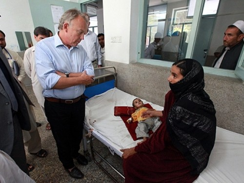

HC Interview: Afghanistan
13 Sep 2012

UN Deputy Special Representative and Humanitarian Coordinator for Afghanistan Michael Keating visits a hospital in Jalalabad. Credit: UNAMA/Eric Kanalstein
The humanitarian needs mustn’t be hostage to politics, says Michael Keating 11 years after 9/11.
In July, the international community pledged to support Afghanistan over the next four years with US$16 billion in development assistance. In the last decade, since the 9/11 attacks, billions more dollars have been spent to help build the political, security and development capacities of the country.
Despite these investments, chronic poverty is affecting a large percentage of the population – 67 per cent face food insecurity, one million children suffer from malnutrition, over 40 per cent live under a $1 a day and only about 20 per cent of women have access to education.
UN agencies and humanitarian organizations continue to provide aid. So far this year, they have reached two million people with food assistance, vaccinated millions of children against deadly diseases and provided shelter to people displaced by conflict and natural disasters.
In this interview, Humanitarian Coordinator Michael Keating talks about what the last 11 years have meant in terms of responding to the humanitarian and development needs of the Afghan people despite the political and security challenges.
Q. It is 11 years since 9/11. Since then billions of dollars of development assistance have been spent on Afghanistan but have there been any improvements in the humanitarian situation?
When you are in Afghanistan things don’t look as gloomy as they are reported to be in the West. I was in Kabul before 9/11 and returned just three years ago. It has been completely transformed, not just Kabul but many parts of the country. You have many more children including girls going to school although there is an issue of retention. You have better health services but far from perfect. There are still huge problems with maternal and reproductive health but medical assistance has improved. There are very busy and dynamic cities but a lot of the urban growth has been unplanned. And there is more freedom of expression than before so there have been some positive changes.
9/11 had triggered indirectly one of the biggest international interventions the country had ever seen. Billions of dollars of development assistance were spent between 2002 and 2010, including vast amounts of money on strengthening the country’s security forces.
Then why are still so many people still living in chronic poverty? Our objectives as humanitarians are not only to improve the humanitarian response but also to challenge some of the policies in place so that we continue to prevent the chronic problems and do everything possible to make sure that the development and humanitarian funds are used to lessen the deprivation and vulnerabilities.
Q. A new UN-backed survey by the Afghan government has found that around a third of young children in southern Afghanistan are acutely malnourished. Why is this the case despite the development assistance?
We were shocked by the results of this survey. The survey shows that over half of the under five-year-olds in Afghanistan are stunted in some areas, including parts of the country which have received very large sums of development assistance. You have malnutrition rates which are among the highest in Asia and equivalent to rates deemed totally unacceptable in other parts of the world. So the question is why is this happening? Is it because of the lack of access to food, cultural practices, low income levels or insecurity? These are the questions that we are now attempting to answer. At the same, we are trying to strengthen the healthcare system’s response to malnutrition but this is not easy at all. Malnourished children are often from large families who don’t have the time or means to take their children to nutrition centres. They don’t even recognize malnutrition as a problem until the children start suffering from other diseases associated with it. It is important that we completely understand what lies behind the data in the survey and work to strengthen our ability to respond to the humanitarian problems.
Q. Donors pledged to provide $16 billion to Afghanistan over the next four years at the Tokyo conference in July, but the aid is conditional on combating corruption. How will this affect the humanitarian or development response?
In Tokyo, the international community pledged rather than committed its support. Most importantly, a political signal was sent showing that the world is not going to abandon Afghanistan despite the political problems of a cash-strapped Government or other priorities such as Syria and Yemen.
The ability to convert those pledges into actual money does depend upon a number of things. Firstly, there needs to be a robust and politically-supported effort by the Afghans to tackle corruption. Secondly, everything possible needs to be done to protect women’s rights, and improve accountability and overall human rights. Thirdly, the 2014 elections must be well planned because if the results are seen as illegitimate by the Afghans and the international community, then the appetite to provide resources will dramatically diminish in places like Washington, Brussels, Tokyo and so on.
From a humanitarian prospective, clearly we want to see the money being pledged and turned into commitments and development results. The Afghan people need jobs and more development support without which they will be even more vulnerable than they already are particularly at a time when the international military is leaving. We are concerned that the departure of the international military will directly or indirectly result in job losses and a decrease in economic activities.
We also don’t want to see the funding for humanitarian needs being conditional upon political considerations. The humanitarian needs mustn’t be hostage to politics. We need to find ways of protecting that and at the same time encourage development interventions that would reduce the need for humanitarian assistance in the first place.

{kind=link}